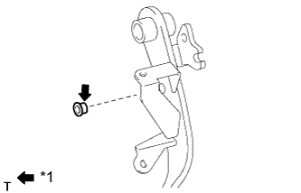
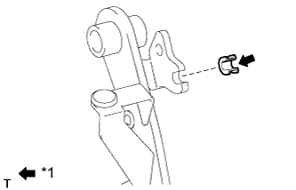
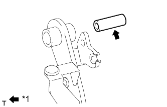
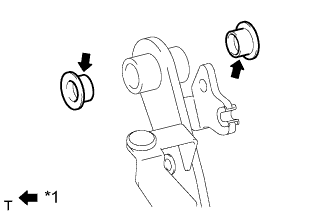
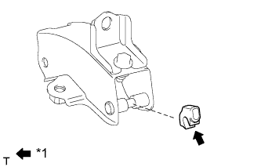

ПЕДАЛЬ СЦЕПЛЕНИЯ (для моделей с правосторонним рулевым управлением) > УСТАНОВКА |
| 1. УСТАНОВИТЕ ВТУЛКУ ВИЛКИ ШТОКА ГЛАВНОГО ЦИЛИНДРА СЦЕПЛЕНИЯ |
|  |
Нанесите на внутренние поверхности новой втулки вилки универсальную консистентную смазку.
| *1 | Универсальная консистентная смазка |
Установите втулку вилки на педаль сцепления.
| 2. УСТАНОВИТЕ ПОВОРОТНУЮ ВТУЛКУ ПЕДАЛИ СЦЕПЛЕНИЯ |
|  |
Нанесите на втулку механизма разгрузки педали сцепления универсальную консистентную смазку.
| *1 | Универсальная консистентная смазка |
Установите втулку механизма разгрузки на педаль сцепления.
| 3. УСТАНОВИТЕ ПОДУШКУ ПЕДАЛИ СЦЕПЛЕНИЯ № 1 |
Установите 3 подушки на педаль сцепления.
| 4. УСТАНОВИТЕ ПОЯСОК ВАЛИКА ПЕДАЛИ СЦЕПЛЕНИЯ |
|  |
Нанесите универсальную консистентную смазку на поясок валика.
| *1 | Универсальная консистентная смазка |
Установите поясок валика на педаль сцепления.
| 5. УСТАНОВИТЕ ВТУЛКУ ПЕДАЛИ СЦЕПЛЕНИЯ |
|  |
Нанесите универсальную консистентную смазку на 2 новых втулки.
| *1 | Универсальная консистентная смазка |
Установите 2 втулки на педаль сцепления.
| 6. УСТАНОВИТЕ НАКЛАДКУ ПЕДАЛИ СЦЕПЛЕНИЯ |
| 7. УСТАНОВИТЕ ОГРАНИЧИТЕЛЬНЫЙ БОЛТ ПЕДАЛИ СЦЕПЛЕНИЯ (для моделей без системы круиз-контроля) |
Вверните ограничительный болт и временно заверните контргайку.
| 8. УСТАНОВИТЕ ПЕРЕКЛЮЧАТЕЛЬ МУФТЫ СЦЕПЛЕНИЯ В СБОРЕ (для моделей с системой круиз-контроля) |
Установите переключатель муфты сцепления и временно заверните контргайку.
| 9. УСТАНОВИТЕ ДЕРЖАТЕЛЬ ПРУЖИНЫ ПЕДАЛИ СЦЕПЛЕНИЯ |
|  |
Нанесите универсальную консистентную смазку на контактную поверхность держателя пружины.
| *1 | Универсальная консистентная смазка |
Установите держатель пружины.
| 10. УСТАНОВИТЕ ПЕДАЛЬ СЦЕПЛЕНИЯ В СБОРЕ |
Установите педаль сцепления и шайбу на кронштейн педали сцепления и закрепите их гайкой и болтом.
| 11. УСТАНОВИТЕ ПРУЖИНУ СЖАТИЯ ЧАШКИ ПРУЖИНЫ МЕХАНИЗМА РАЗГРУЗКИ СЦЕПЛЕНИЯ |
Установите пружину сжатия на педаль сцепления и держатель пружины.
| 12. УСТАНОВИТЕ ПУСКОВОЙ ПЕРЕКЛЮЧАТЕЛЬ МУФТЫ СЦЕПЛЕНИЯ В СБОРЕ |
Для моделей с левосторонним рулевым управлением:
Установите пусковой переключатель муфты сцепления в сборе и закрепите его гайкой.
Подсоедините разъем пускового переключателя муфты сцепления.
Для моделей с правосторонним рулевым управлением:
Установите пусковой переключатель муфты сцепления в сборе и закрепите его гайкой.
Подсоедините разъем пускового переключателя муфты сцепления и присоедините зажим.
| 13. УСТАНОВИТЕ ПЕДАЛЬ СЦЕПЛЕНИЯ В СБОРЕ |
Закрепите педаль сцепления болтом.
| 14. УСТАНОВИТЕ ГЛАВНЫЙ ЦИЛИНДР СЦЕПЛЕНИЯ В СБОРЕ |
Установите главный цилиндр сцепления (Нажмите здесь).
| 15. УСТАНОВИТЕ ПОДУШКУ БЕЗОПАСНОСТИ № 1 ДЛЯ ЗАЩИТЫ НОГ В СБОРЕ |
Установите подушку безопасности № 1 для защиты ног (Нажмите здесь).